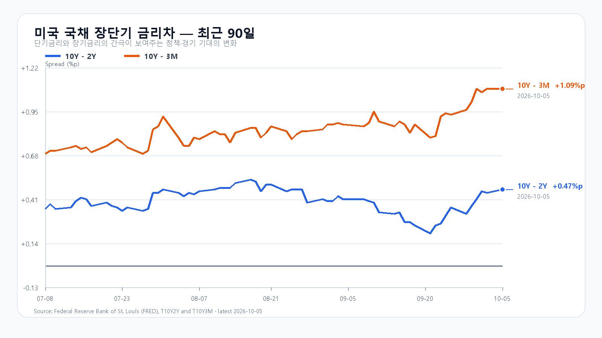
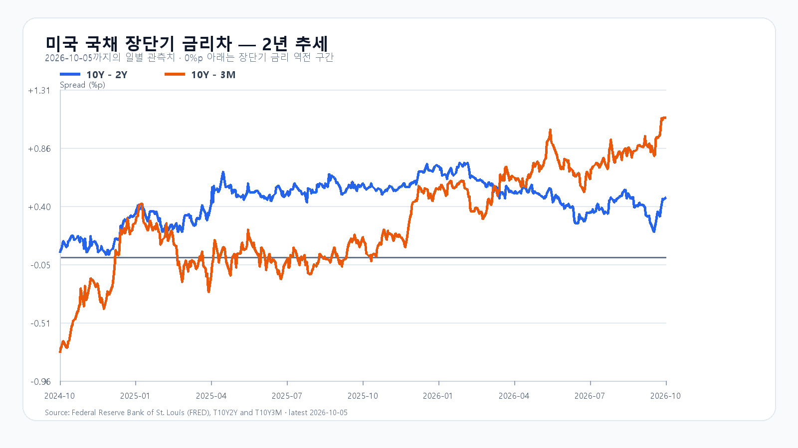

미국 증시는 10월 5일 나스닥이 1.1% 올라 사상 최고치를 새로 쓰며 마감했다. Nvidia와 Broadcom은 각각 2% 안팎 올랐지만, 반도체 ETF의 상승폭은 SOXX 0.10%, SMH 0.52%에 그쳤고 Micron은 1.02% 내렸다. AI 인프라 기대가 꺾인 것은 아니지만, 메모리주만으로 한국 지수의 추가 상승을 설명하기에는 밤사이 신호가 고르지 않다.
9월 미국 고용은 비농업 일자리가 2만9천 개 늘고 실업률은 4.2%를 기록했다. 고용 둔화는 장기금리와 달러를 낮춰 주식 할인율에는 우호적일 수 있다. 실제로 하나은행 원/달러 고시는 1,342.50원으로 1.25% 하락했고, 장전 NXT에서 삼성전자는 277,500원(+0.54%), SK하이닉스는 1,843,000원(+0.11%)으로 올랐다. 다만 10년물은 5%대에 있고, 미국 반도체 ETF의 제한된 상승은 추격 매수보다 국내 현물·프로그램 수급 확인을 먼저 보게 한다.
메모리의 중기 수급은 여전히 단단하다. Micron은 최근 실적 발표에서 2027~2028년에도 수요가 공급을 웃돌 수 있다고 제시했다. 이는 HBM과 서버 DRAM의 가격 환경을 받치는 재료다. 그러나 10월 5일 Micron 주가 하락은 메모리 펀더멘털과 개별 주가의 단기 포지션을 분리해 볼 필요를 남긴다. 10월 2일 KOSPI가 7,003.74, KODEX 레버리지가 114,395원으로 마감하며 이미 오른 만큼, 그 상승분을 오늘의 새 호재로 더하지 않는다.
기본 시나리오는 KOSPI 6,950~7,080, 확률 50%다. 원화 강세와 장전 메모리주 상승이 6,950선 위를 지지하되, 7,080선 위에서는 외국인 현물과 프로그램이 함께 순매수로 전환하는지를 확인하는 경로다. 7,080을 넘고 두 수급이 동반 순매수로 기울면 7,080 초과~7,220의 강세 범위를 본다. 반대로 6,950을 이탈하고 수급이 함께 순매도로 기울면 6,780~6,950 미만의 약세 범위가 열린다.
KODEX 레버리지는 111,500원을 1차 지지, 114,395원을 반등 기준, 117,500원을 저항으로 둔다. 장중 고저 예상 범위는 KOSPI 6,700~7,260이다. 대응 점수는 공격 30, 관망 50, 방어 20이다.
| 종가 시나리오 | 범위·확률 | 15시 20분 확인 조건 | 전환 신호 |
|---|---|---|---|
| --- | ---: | --- | --- |
| 기본 | 6,950~7,080 · 50% | 6,950 이상 · 7,080 이하 · 외국인 매도 급확대 없음 | 범위 이탈 |
| 강세 | 7,080 초과~7,220 · 30% | 7,080 초과 · 외국인·프로그램 동반 순매수 | 7,080 아래 재진입 |
| 약세 | 6,780~6,950 미만 · 20% | 6,950 미만 · 외국인·프로그램 동반 순매도 | 6,950 회복 |

